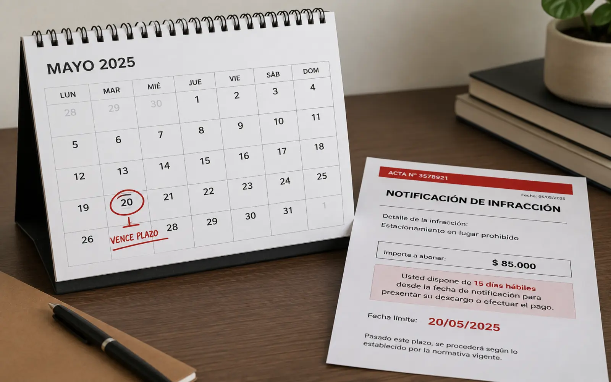

01
Cuándo corresponde presentar un descargo
No toda infracción se discute del mismo modo ni conviene discutirlas todas. El descargo tiene sentido cuando hay algo concreto que oponer: un defecto en el acta, un problema en la notificación, una discrepancia entre lo imputado y lo que efectivamente ocurrió, o una circunstancia que el organismo no tuvo a la vista.
Cuando no hay materia de discusión, insistir puede significar perder tiempo y, en algunos casos, la posibilidad de acceder a una reducción. Parte del análisis consiste precisamente en establecer cuándo no conviene.
Situaciones en las que suele corresponder
- El acta presenta errores en los datos del vehículo, del hecho o de la fecha.
- La notificación no se practicó, o se practicó en un domicilio que no es el suyo.
- El vehículo había sido vendido o denunciado antes del hecho imputado.
- Existen constancias que contradicen la infracción que se le atribuye.
02
Qué documentación hace falta
Cuanto más completo sea el material, más sólido es el planteo. No siempre se cuenta con todo, y eso no impide empezar: parte de la documentación puede obtenerse después, y a veces el propio expediente aporta lo que falta.
Lo que conviene reunir
- El acta o la notificación que recibió, con su número de expediente.
- La documentación del vehículo: título, cédula y constancia de seguro.
- Su DNI y, si corresponde, la constancia de venta o denuncia de venta.
- Cualquier comprobante que ubique al vehículo o a usted en otro lugar o situación.
Si no tiene el acta
Con el dominio del vehículo y el DNI del titular puede relevarse qué figura y ante qué organismo, y solicitarse vista del expediente.
Cuánto tarda
Depende del organismo interviniente, de modo que no puede anticiparse un plazo único.
03
Por qué los plazos son determinantes
En materia de faltas los plazos suelen ser breves y perentorios: vencido el plazo, la vía deja de estar disponible con independencia del fondo del planteo.
Por ello, el plazo aplicable debe verificarse desde la recepción de la notificación. La conveniencia y contenido de un eventual descargo dependen de las circunstancias y antecedentes de cada caso.
Si existe una notificación con plazo, debe verificarse su vencimiento antes de adoptar decisiones que puedan producir efectos en el procedimiento, incluido el pago voluntario.

04
La notificación de la infracción
La notificación es la que le permite conocer la imputación y ejercer su defensa, y por eso tiene requisitos propios de forma, de domicilio y de constancia. Cuando esos requisitos no se cumplen, lo que queda comprometido no es sólo un trámite sino la posibilidad misma de defenderse.
Verificar cómo, cuándo y dónde se practicó suele ser el primer paso del análisis, incluso antes de mirar el fondo de la infracción.
05
Identificar el juzgado competente
Cada municipio tiene su propio juzgado de faltas, con su procedimiento y sus plazos. Presentar el descargo ante el organismo que no corresponde hace perder tiempo, y ese tiempo puede ser justamente el que faltaba.
Determinar ante quién se presenta forma parte del trabajo previo, sobre todo cuando la persona acumula infracciones de más de un municipio y no tiene claro de dónde proviene cada una.
Si tiene multas de varios municipios a la vez, lo tratamos acá:
multas de municipios distintos.
06
La apelación posterior
Presentar un descargo no agota necesariamente las posibilidades. Si la resolución es adversa, en determinados casos puede recurrirse para que otra instancia la revise, con plazos que también suelen ser breves.
Que esa vía siga disponible depende en buena medida de cómo se planteó el descargo: los argumentos que no se introdujeron a tiempo pueden no admitirse después. Por eso conviene pensar la presentación considerando también lo que viene.
Más sobre esta instancia:
recursos de apelación y
sentencias de faltas.